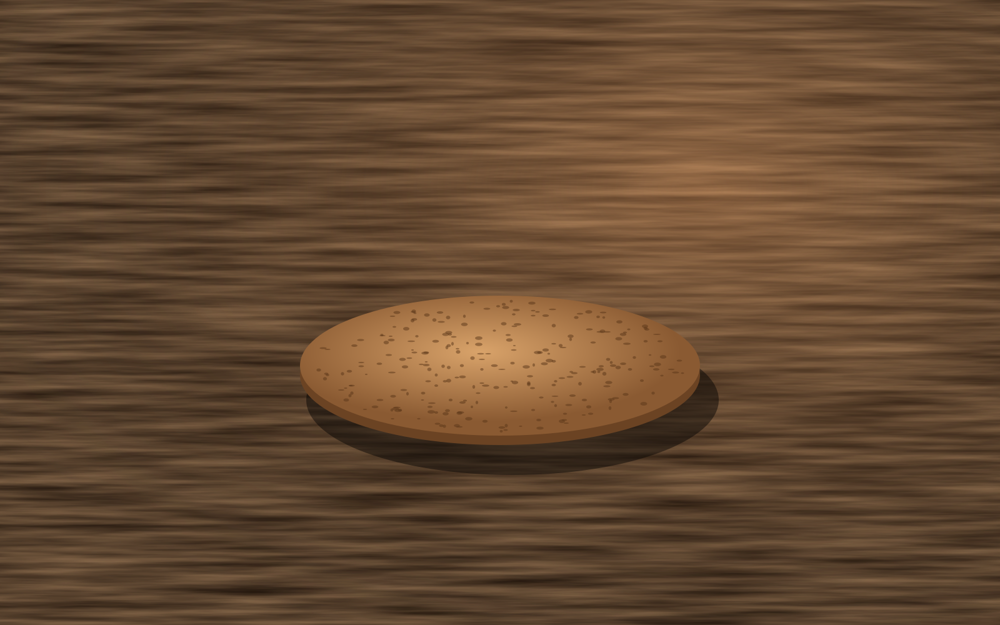
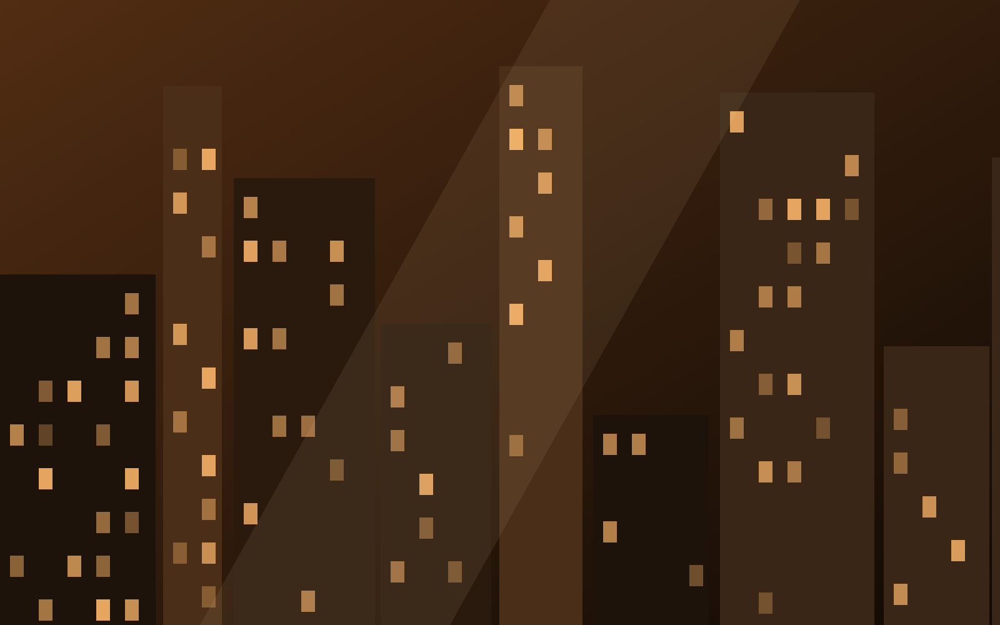
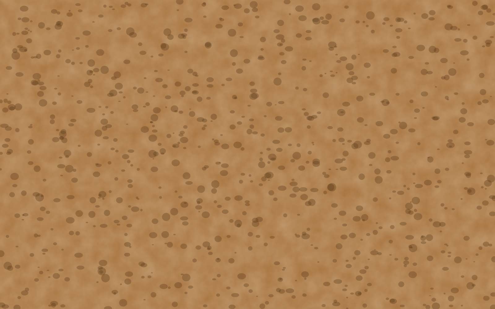

z 0 · a mesaTudo começa na superfície.
Base nº 7 sobre a mesa. Role: a câmera não desce, ela entra.
scroll · deps gsap · mobile degradar · custo alto
Quando o scroll anda, a câmera faz dolly no Z com scrub none, porque a história é penetração, não descida de documento.

z 0 · a mesaBase nº 7 sobre a mesa. Role: a câmera não desce, ela entra.

z −900 · o ateliêCada plano está estacionado mais fundo. É o mundo que avança até você.

z −1800 · o materialOpacidade por distância: o plano acende ao chegar e se apaga ao passar pela lente.
 z −2700 · o fundo
z −2700 · o fundo
Fim do túnel. O próximo bloco sobe por cima do viewport fixo.
Saiu do túnel. O viewport é fixo: sem cuidado, ele cobriria esta lição. Aqui a saída é dupla: o bloco seguinte tem z-index e fundo, e o viewport some fora do trecho do dive (onToggle).
Produto, espaço, filme, "entrar" no método. É o mais próximo de um túnel WebGL sem WebGL.
Lista, pricing, depoimento, formulário. Com qualquer outra câmera: hijack, sticky stack, zoom parallax, curtain.
Sem viewport fixo nem spacer: os 4 planos empilham no Y em fluxo normal. No mobile (< 768px) o dive também degrada para essa pilha.